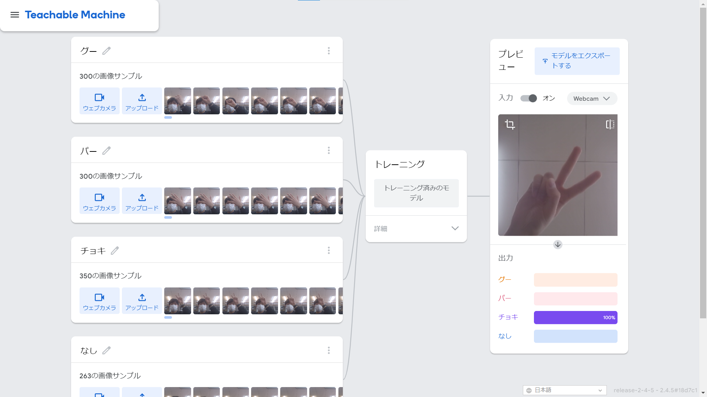

第2週目
2-1 １週目のレポートをHTMLで作る
１週目のレポート
1.内容
サイエンスアートとゲームのスクリーンショットをGitHubにアップロードした。
website/rep01.htmlの編集ボタンをクリックして、内容と感想を記入した。
2.感想
スクリーンショットを指定された名前でアップロードすると何もしていないのに画像が表示されて感心した。
brを使って改行することで、文章が見やすくなることが実感できた。
2-2 機械学習体験

1.内容
Teachable Machineを使ってグー・チョキ・パーを判別するAIモデルを作った。
それぞれの場合の手の写真を300枚ほど撮影した。そのサンプルから自動的にトレーニングしモデルが作成された。
また、「なし」という選択肢を追加することで、なにも出していないときは「なし」が出力されるようにした。
2.感想
AIモデルに作成にはもっと複雑なコードを入力し、時間がかかると思っていた。
しかし、Teachable Machineではサンプル画像を入れ、名前を付けるだけでAIモデルが作成できてとても驚いた。
完璧に判別できたわけではなく、判別ミスもあったため、サンプル画像を増やす、背景に手以外のものが映らないようにするなどの工夫が必要だと感じた。
2-3 VR（バーチャルリアリティー：Virtual Reality）会議室の体験
1.内容
仮想空間にある会議室にVRゴーグルを装着して入った。
コントローラを使ってホワイトボードに書き込んだ。
2.感想
手にコントローラを持ってVRの世界に入るのは初めてだったので、とても刺激的だった。
また、別の場所にいる人にも動きや声をリアルタイムで伝えることができ不思議な感覚だった。